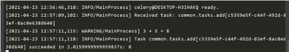

Django项目中使用Celery执行异步和周期性任务
Django Web项目中我们经常需要执行耗时的任务比如发送邮件、调用第三方接口、批量处理文件等等，将这些任务异步化放在后台运行可以有效缩短请求响应时间。另外服务器上经常会有定时任务的需求，比如清除缓存、备份数据库等工作。Celery是一个高效的异步任务队列/基于分布式消息传递的作业队列，可以轻松帮我们在Django项目中设置执行异步和周期性任务。
本文将详细演示如何在Django项目中集成Celery设置执行异步和周期性任务并总结下一些注意事项。
Celery的工作原理¶
Celery是一个高效的基于分布式消息传递的作业队列。它主要通过消息(messages)传递任务，通常使用一个叫Broker(中间人)来协调client(任务的发出者)和worker(任务的处理者)。 clients发出消息到队列中，broker将队列中的信息派发给 Celery worker来处理。Celery本身不提供消息服务，它支持的消息服务(Broker)有RabbitMQ和Redis。小编一般推荐Redis，因为其在Django项目中还是首选的缓存后台。
安装项目依赖文件¶
本项目使用了最新Django和Celery版本。因为本项目使用Redis做消息队列的broker，所以还需要安装redis (Windows下安装和启动redis参见菜鸟教程)。另外如果你要设置定时或周期性任务，还需要安装<font style="color:rgb(92, 89, 98);background-color:rgb(245, 246, 250);">django-celery-beat</font>。
| Python | |
|---|---|
Celery配置¶
在正式使用<font style="color:rgb(92, 89, 98);background-color:rgb(245, 246, 250);">celery</font>和<font style="color:rgb(92, 89, 98);background-color:rgb(245, 246, 250);">django-celery-beat</font>之前，你需要做基础的配置。假如你的Django项目文件夹布局如下所示，你首先需要在myproject/myproject目录下新增<font style="color:rgb(92, 89, 98);background-color:rgb(245, 246, 250);">celery.py</font>并修改<font style="color:rgb(92, 89, 98);background-color:rgb(245, 246, 250);">__init__.py</font>。
| Python | |
|---|---|
新建<font style="color:rgb(92, 89, 98);background-color:rgb(245, 246, 250);">celery.py</font>，添加如下代码：
修改<font style="color:rgb(92, 89, 98);background-color:rgb(245, 246, 250);">__init__.py</font>，如下所示：
接下来修改Django项目的<font style="color:rgb(92, 89, 98);background-color:rgb(245, 246, 250);">settings.py</font>，添加Celery有关配置选项，如下所示：
其它Celery常用配置选项包括：
完整配置选项见：
- https://docs.celeryproject.org/en/stable/userguide/configuration.html#std-setting-result_expires
注意：
- 在Django中正式编写和执行自己的异步任务前，一定要先测试redis和celery是否安装好并配置成功。
- 一个无限期阻塞的任务会使得工作单元无法再做其他事情，建议给任务设置超时时间。
测试Celery是否工作正常¶
首先你要启动redis服务。windows进入redis所在目录(比如C:\redis)，使用<font style="color:rgb(92, 89, 98);background-color:rgb(245, 246, 250);">redis-server.exe</font>启动redis。Linux下使用<font style="color:rgb(92, 89, 98);background-color:rgb(245, 246, 250);">./redis-server redis.conf</font>启动，也可修改redis.conf将daemonize设置为yes, 确保守护进程开启。
启动redis服务后，你要先进入项目所在文件夹运行<font style="color:rgb(92, 89, 98);background-color:rgb(245, 246, 250);">python manage.py runserver</font>命令启动Django服务器（无需创建任何app)，然后再打开一个终端terminal窗口输入celery命令，启动worker。
| Python | |
|---|---|
如果你能看到[tasks]下所列异步任务清单如<font style="color:rgb(92, 89, 98);background-color:rgb(245, 246, 250);">debug_task</font>，以及最后一句celery@xxxx ready, 说明你的redis和celery都配置好了，可以开始正式工作了。
编写任务¶
Celery配置完成后，我们就可以编写任务了。Django项目中所有需要Celery执行的异步或周期性任务都放在<font style="color:rgb(92, 89, 98);background-color:rgb(245, 246, 250);">tasks.py</font>文件里，该文件可以位于project目录下，也可以位于各个app的目录下。专属于某个Celery实例化项目的task可以使用<font style="color:rgb(92, 89, 98);background-color:rgb(245, 246, 250);">@app.task</font>装饰器定义，各个app目录下可以复用的task建议使用<font style="color:rgb(92, 89, 98);background-color:rgb(245, 246, 250);">@shared_task</font>定义。
两个示例如下所示：
| Python | |
|---|---|
上面我们定义一个名为<font style="color:rgb(92, 89, 98);background-color:rgb(245, 246, 250);">add</font>的任务，它接收两个参数，并返回计算结果。为了模拟耗时任务，我们中途让其sleep 2秒。现在已经定义了一个耗时任务，我们希望在Django的视图或其它地方中以异步方式调用执行它，应该怎么做呢? 下面我们将给出答案。
注意：
- 使用celery定义任务时，避免在一个任务中调用另一个异步任务，容易造成阻塞。
- 当我们使用
<font style="color:rgb(92, 89, 98);background-color:rgb(245, 246, 250);">@app.task</font>装饰器定义我们的异步任务时，那么这个任务依赖于根据项目名myproject生成的Celery实例。然而我们在进行Django开发时为了保证每个app的可重用性，我们经常会在每个app文件夹下编写异步任务，这些任务并不依赖于具体的Django项目名。使用<font style="color:rgb(92, 89, 98);background-color:rgb(245, 246, 250);">@shared_task</font><font style="color:rgb(92, 89, 98);background-color:rgb(245, 246, 250);"> </font>装饰器能让我们避免对某个项目名对应Celery实例的依赖，使app的可移植性更强。
异步调用任务¶
Celery提供了2种以异步方式调用任务的方法，<font style="color:rgb(92, 89, 98);background-color:rgb(245, 246, 250);">delay</font>和<font style="color:rgb(92, 89, 98);background-color:rgb(245, 246, 250);">apply_async</font>方法，如下所示：
| Python | |
|---|---|
我们接下来看一个具体的例子。我们编写了一个Django视图函数，使用<font style="color:rgb(92, 89, 98);background-color:rgb(245, 246, 250);">delay</font>方法调用<font style="color:rgb(92, 89, 98);background-color:rgb(245, 246, 250);">add</font>任务。
| Python | |
|---|---|
当你通过浏览器访问/test/链接时，你根本感受不到2s的延迟，页面可以秒开，同时你会发现终端的输出如下所示，显示任务执行成功。

我们现在再次使用<font style="color:rgb(92, 89, 98);background-color:rgb(245, 246, 250);">apply_async</font>方法调用<font style="color:rgb(92, 89, 98);background-color:rgb(245, 246, 250);">add</font>任务，不过还要打印初任务的id (task.id)和状态status。Celery会为每个加入到队列的任务分配一个独一无二的uuid, 你可以通过<font style="color:rgb(92, 89, 98);background-color:rgb(245, 246, 250);">task.status</font>获取状态和<font style="color:rgb(92, 89, 98);background-color:rgb(245, 246, 250);">task.result</font>获取结果。注意：<font style="color:rgb(92, 89, 98);background-color:rgb(245, 246, 250);">apply_async</font>传递参数的方式与delay方法不同。
| Python | |
|---|---|
Django返回响应结果如下所示。这是在预期之内的，因为Django返回响应时任务还未执行完毕。
那么问题来了，这个异步任务执行了，返回了个计算结果(8)，那么我们系统性地了解任务状态并获取这个执行结果呢? 答案是<font style="color:rgb(92, 89, 98);background-color:rgb(245, 246, 250);">django-celery-results</font>。
查看任务执行状态及结果¶
通过pip安装<font style="color:rgb(92, 89, 98);background-color:rgb(245, 246, 250);">django-celery-results</font>后，需要将其加入到<font style="color:rgb(92, 89, 98);background-color:rgb(245, 246, 250);">INSTALLED_APPS</font>并使用<font style="color:rgb(92, 89, 98);background-color:rgb(245, 246, 250);">migrate</font>命令迁移创建数据表。以下几项配置选项是与这个库相关的。
| Python | |
|---|---|
安装配置完成后，进入Django admin后台，你就可以详细看到每个任务的id、名称及状态。
除了在Django admin后台中查看任务状态和结果，你还可以在视图中通过<font style="color:rgb(92, 89, 98);background-color:rgb(245, 246, 250);">AsyncResult</font>方法获取任务执行状态和结果，它需要接收一个任务的<font style="color:rgb(92, 89, 98);background-color:rgb(245, 246, 250);">task_id</font>(通常为uuid格式)。
| Python | |
|---|---|
设置定时和周期性任务¶
借助于装<font style="color:rgb(92, 89, 98);background-color:rgb(245, 246, 250);">django-celery-beat</font>后, 你可以将任一Celery任务设置为定时任务或周期性任务。使用它你只需要通过pip安装它，并加入INSTALLED_APPS里去。
<font style="color:rgb(92, 89, 98);background-color:rgb(245, 246, 250);">django-celery-beat</font>提供了两种添加定时或周期性任务的方式，一是直接在<font style="color:rgb(92, 89, 98);background-color:rgb(245, 246, 250);">settings.py</font>中添加，二是通过Django admin后台添加。
配置文件添加任务¶
同一任务可以设置成不同的调用周期，给它们不同的任务名就好了。
| Python | |
|---|---|
Django Admin添加周期性任务¶
先在<font style="color:rgb(92, 89, 98);background-color:rgb(245, 246, 250);">settings.py</font>中将任务调度器设为<font style="color:rgb(92, 89, 98);background-color:rgb(245, 246, 250);">DatabaseScheduler</font>
| Python | |
|---|---|
然后进入Periodic Task表添加和修改周期性任务即可。
通过Crontab设置定时任务¶
如果你希望在特定的时间(某月某周或某天)执行一个任务，你可以通过crontab设置定时任务，如下例所示：
| Python | |
|---|---|
更多Crontab定义案例如下所示：
| 例子 | 含义 |
|---|---|
<font style="color:rgb(92, 89, 98);background-color:rgb(245, 246, 250);">crontab()</font> |
每分 |
<font style="color:rgb(92, 89, 98);background-color:rgb(245, 246, 250);">crontab(minute=0, hour=0)</font> |
每天午夜 |
<font style="color:rgb(92, 89, 98);background-color:rgb(245, 246, 250);">crontab(minute=0, hour='*/3')</font> |
能被3整除的小时数，3，6，9点等等 |
<font style="color:rgb(92, 89, 98);background-color:rgb(245, 246, 250);">crontab(minute=0,</font><font style="color:rgb(92, 89, 98);background-color:rgb(245, 246, 250);">hour='0,3,6,9,12,15,18,21')</font> |
与前面相同，指定小时 |
<font style="color:rgb(92, 89, 98);background-color:rgb(245, 246, 250);">crontab(minute='*/15')</font> |
每15分钟 |
<font style="color:rgb(92, 89, 98);background-color:rgb(245, 246, 250);">crontab(day_of_week='sunday')</font> |
星期日每分钟 |
<font style="color:rgb(92, 89, 98);background-color:rgb(245, 246, 250);">crontab(minute='*',</font><font style="color:rgb(92, 89, 98);background-color:rgb(245, 246, 250);">hour='*',</font><font style="color:rgb(92, 89, 98);background-color:rgb(245, 246, 250);">day_of_week='sun')</font> |
同上 |
<font style="color:rgb(92, 89, 98);background-color:rgb(245, 246, 250);">crontab(minute='*/10',</font><font style="color:rgb(92, 89, 98);background-color:rgb(245, 246, 250);">hour='3,17,22',</font><font style="color:rgb(92, 89, 98);background-color:rgb(245, 246, 250);">day_of_week='thu,fri')</font> |
每10分钟运行一次, 但仅限于周四或周五的 3-4 am, 5-6 pm, 和10-11 pm. |
<font style="color:rgb(92, 89, 98);background-color:rgb(245, 246, 250);">crontab(minute=0, hour='*/2,*/3')</font> |
可以被2或3整除的小时数，除了 1am, 5am, 7am, 11am, 1pm, 5pm, 7pm, 11pm |
<font style="color:rgb(92, 89, 98);background-color:rgb(245, 246, 250);">crontab(minute=0, hour='*/5')</font> |
可以被5整除的小时 |
<font style="color:rgb(92, 89, 98);background-color:rgb(245, 246, 250);">crontab(minute=0, hour='*/3,8-17')</font> |
8am-5pm之间可以被3整除的小时 |
<font style="color:rgb(92, 89, 98);background-color:rgb(245, 246, 250);">crontab(0, 0, day_of_month='2')</font> |
每个月的第2天 |
<font style="color:rgb(92, 89, 98);background-color:rgb(245, 246, 250);">crontab(0, 0,</font><font style="color:rgb(92, 89, 98);background-color:rgb(245, 246, 250);">day_of_month='2-30/2')</font> |
每月的偶数日 |
<font style="color:rgb(92, 89, 98);background-color:rgb(245, 246, 250);">crontab(0, 0,</font><font style="color:rgb(92, 89, 98);background-color:rgb(245, 246, 250);">day_of_month='1-7,15-21')</font> |
每月的第一和第三周 |
<font style="color:rgb(92, 89, 98);background-color:rgb(245, 246, 250);">crontab(0, 0, day_of_month='11',</font><font style="color:rgb(92, 89, 98);background-color:rgb(245, 246, 250);">month_of_year='5')</font> |
每年的5月11日 |
<font style="color:rgb(92, 89, 98);background-color:rgb(245, 246, 250);">crontab(0, 0,</font><font style="color:rgb(92, 89, 98);background-color:rgb(245, 246, 250);">month_of_year='*/3')</font> |
每个季度首个月份每天 |
Crontab也可以通过Django Admin添加，然后与任务进行绑定。
如果你变换了时区timezone，比如从’UTC’变成了’Asia/Shanghai’，需重置周期性任务，这非常重要。
| Python | |
|---|---|
前面我们只是添加了定时或周期性任务，我们还需要启动任务调度器beat分发定时和周期任务给Celery的worker。
启动任务调度器beat¶
多开几个终端，一个用来启动任务调度器beat，另一个启动celery worker，你的任务就可以在后台执行啦。
| Python | |
|---|---|
Flower监控任务执行状态¶
除了<font style="color:rgb(92, 89, 98);background-color:rgb(245, 246, 250);">django_celery_results</font>, 你可以使用<font style="color:rgb(92, 89, 98);background-color:rgb(245, 246, 250);">flower</font>监控后台任务执行状态。它提供了一个可视化的界面，在测试环境中非常有用。
| Python | |
|---|---|
安装好后，你有如下两种方式启动服务器。启动服务器后，打开http://localhost:5555即可查看监控情况。
| Python | |
|---|---|
Celery高级用法与注意事项¶
给任务设置最大重试次数¶
定义任务时可以通过<font style="color:rgb(92, 89, 98);background-color:rgb(245, 246, 250);">max_retries</font>设置最大重试次数，并调用<font style="color:rgb(92, 89, 98);background-color:rgb(245, 246, 250);">self.retry</font>方法调用。因为要调用<font style="color:rgb(92, 89, 98);background-color:rgb(245, 246, 250);">self</font>这个参数，定义任务时必须设置<font style="color:rgb(92, 89, 98);background-color:rgb(245, 246, 250);">bind=True</font>。
不同任务交由不同Queue处理¶
不同的任务所需要的资源和时间不一样的。为了防止一些非常占用资源或耗时的任务阻塞任务队列导致一些简单任务也无法执行，可以将不同任务交由不同的Queue处理。下例定义了两个Queue队列，default执行普通任务，heavy_tasks执行重型任务。
忽略不想要的结果¶
如果你不在意任务的返回结果，可以设置 **<font style="color:rgb(92, 89, 98);background-color:rgb(245, 246, 250);">ignore_result</font>** 选项，因为存储结果耗费时间和资源。你还可以可以通过 **<font style="color:rgb(92, 89, 98);background-color:rgb(245, 246, 250);">task_ignore_result</font>** 设置全局忽略任务结果。
避免启动同步子任务¶
让一个任务等待另外一个任务的返回结果是很低效的，并且如果工作单元池被耗尽的话这将会导致死锁。
# 好例子
在好例子里，我们将不同的任务签名链接起来创建一个任务链，三个子任务按顺序执行。
Django的模型对象不应该作为参数传递¶
Django 的模型对象不应该作为参数传递给任务。几乎总是在任务运行时从数据库获取对象是最好的，因为老的数据会导致竞态条件。假象有这样一个场景，你有一篇文章，以及自动展开文章中缩写的任务：
| Python | |
|---|---|
首先，作者创建一篇文章并保存，这时作者点击一个按钮初始化一个缩写展开任务：
现在，队列非常忙，所以任务在2分钟内都不会运行。与此同时，另一个作者修改了这篇文章，当这个任务最终运行，因为老版本的文章作为参数传递给了这个任务，所以这篇文章会回滚到老的版本。修复这个竞态条件很简单，只要参数传递文章的 id 即可，此时可以在任务中重新获取这篇文章：
| Python | |
|---|---|
使用on_commit函数处理事务¶
我们再看另外一个celery中处理事务的例子。这是在数据库中创建一个文章对象的 Django 视图，此时传递主键给任务。它使用 **<font style="color:rgb(92, 89, 98);background-color:rgb(245, 246, 250);">commit_on_success</font>** 装饰器，当视图返回时该事务会被提交，当视图抛出异常时会进行回滚。
| Python | |
|---|---|
如果在事务提交之前任务已经开始执行会产生一个竞态条件；数据库对象还不存在。解决方案是使用 **<font style="color:rgb(92, 89, 98);background-color:rgb(245, 246, 250);">on_commit</font>** 回调函数来在所有事务提交成功后启动任务。
| Python | |
|---|---|
小结¶
本文详细演示了如何在Django项目中集成Celery设置执行异步、定时和周期性任务，并提供了一些高级使用案例和注意事项，希望对你有所帮助。